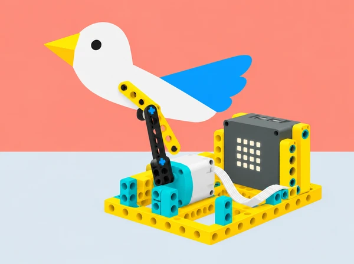

Un grup crea una escena breu sobre un ocell, un peix o un personatge imaginari de l’Albufera. Construeix una titella de paper amb un mecanisme SPIKE Prime que li dona un moviment reconeixible. El relat i els personatges són propis; el robot és un suport escènic, no una representació fidel d’un animal real.
La seqüència treballa la transformació de moviment i la millora iterativa del prototip. El programa pot sincronitzar so i moviment, alternar gestos amb els botons A/B del hub i repetir parts de l’escena amb un bucle; cada equip tria els blocs adequats i comenta en pseudocodi l’ordre d’accions abans de programar. Els exemples Python del brief són per a l’app SPIKE Legacy: comproveu que eixa app i l’entorn funcionen als dispositius del centre abans de triar Python. Si no, l’activitat completa es pot resoldre en blocs. El so és opcional i mai no és imprescindible per entendre el relat.
Guardeu l’esquema del mecanisme, el codi o pseudocodi i les observacions sobre la primera prova i una millora. La revisió entre equips comprova si s’identifiquen la criatura, el sentit del moviment i l’activació de cada variant; els criteris són comprensibilitat, moviment controlat i explicació de la transformació mecànica. Les titelles poden comunicar-se amb forma, color, moviment, narració oral o subtítols en una targeta; oferiu també un rol de direcció o relat sense manipulació mecànica.
Partim del repte SPIKE Activity Brief: Puppet Show i de l’exemple oficial de programació Python. S’hi conserven la creació d’una criatura i l’exploració de com es mou, la transformació de moviment rotacional en lineal, la prova i millora del prototip, el moviment amb música, els comportaments diferents segons el botó, el so simultani i els bucles for/while. La titella, el context, les activitats, els criteris i la imatge són propis. L’exemple Python depén de l’app SPIKE Legacy; s’ofereix programació per blocs com a alternativa completa.